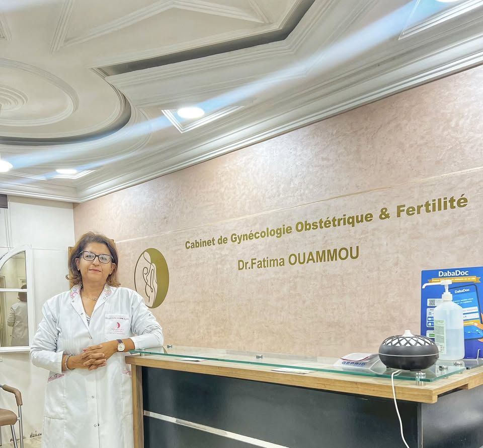

Gynécologue obstétricienne à Témara – Dr Fatima Ouammou
Une question qui vous inquiète, une grossesse qui se fait attendre, une douleur dont vous n'osez pas parler… Le Dr Fatima Ouammou vous écoute, vous explique, et vous accompagne sans jugement.
📍Cabinet à Témara1er étage, 65 Quartier El Maghreb Al Arabi, Av. Tarik Ibn ZiadEn face de BIMItinéraire →- Spécialiste en gynécologie obstétriqueFaculté de médecine de Rabat
- CœlioscopieClermont-Ferrand · France
- Colposcopie & pathologie cervico-vaginaleLille · France
- HystéroscopieParis Descartes · France
- Stérilité du couple & FIVLille · Montpellier · New York
- Ancienne interneCHU Ibn Rochd · Casablanca
- Ancienne médecinMaternité Souissi · Rabat
- Ancienne chef de serviceHôpital régional · Guelmim

- Spécialiste en gynécologie obstétriqueFaculté de médecine de Rabat
- CœlioscopieClermont-Ferrand · France
- Colposcopie & pathologie cervico-vaginaleLille · France
- HystéroscopieParis Descartes · France
- Stérilité du couple & FIVLille · Montpellier · New York
- Ancienne interneCHU Ibn Rochd · Casablanca
- Ancienne médecinMaternité Souissi · Rabat
- Ancienne chef de serviceHôpital régional · Guelmim
Tous les problèmes de la femme, expliqués simplement
Des plus fréquents aux plus rares : trouvez votre problème, comprenez ce qui se passe, et sachez ce que le docteur peut faire pour vous.
Ces informations sont là pour vous aider à comprendre. Elles ne remplacent pas une consultation : seul un examen permet de poser un diagnostic.
Une femme médecin
Pour parler librement, entre femmes.
Écoute sans jugement
Toutes les questions sont légitimes.
Darija ou français
Des explications simples, dans votre langue.
Confidentialité
Ce que vous dites reste au cabinet.
Les questions qu'on n'ose pas poser
Beaucoup de femmes repoussent leur rendez-vous par peur ou par gêne. Voici les réponses.
Est-ce que l'examen fait mal ?
En général, non. L'examen est rapide et le docteur vous explique chaque geste avant de le faire. Si vous êtes mal à l'aise, vous pouvez le dire à tout moment : on s'arrête, on prend le temps.
Je suis gênée de me déshabiller.
C'est très courant, et c'est normal. Vous êtes reçue par une femme, dans un cabinet fermé. On ne découvre que ce qui est nécessaire à l'examen, et pas forcément dès la première visite.
Je ne suis pas mariée / je suis vierge. Puis-je consulter ?
Oui, bien sûr. L'examen est adapté à votre situation : par exemple, l'échographie peut se faire par le ventre. Votre intimité est respectée.
Puis-je venir accompagnée ?
Oui. Votre mère, votre sœur, une amie ou votre mari peuvent vous accompagner. Vous pouvez aussi demander à parler seule avec le docteur.
Ce que je dis restera-t-il confidentiel ?
Oui. Le secret médical est absolu : rien de ce que vous dites n'est partagé avec votre famille ou votre entourage sans votre accord.
Faut-il éviter de venir pendant les règles ?
Pour une consultation ou une échographie, ce n'est pas un problème. Pour un frottis, il vaut mieux venir en dehors des règles. En cas de doute, appelez le cabinet.
Dr Fatima Ouammou
Gynécologue obstétricienne diplômée de la Faculté de médecine de Rabat, formée en France et aux États-Unis, ancienne chef de service à l'hôpital régional de Guelmim, elle accompagne les femmes de Témara depuis plus de dix ans : de la première consultation à l'accouchement, des difficultés à concevoir à la ménopause.
Sur sa page Facebook, elle publie régulièrement des vidéos en darija pour expliquer simplement ce qui inquiète ses patientes.
- 🎓Diplôme de spécialiste en gynécologie obstétriqueFaculté de médecine de Rabat
- 🎓Diplôme en cœlioscopieClermont-Ferrand, France
- 🎓Diplôme en colposcopie et pathologie cervico-vaginaleLille, France
- 🎓Diplôme en hystéroscopieUniversité Paris Descartes, France
- 🎓Diplôme en stérilité du couple et fécondation in vitroLille, Montpellier (France) et New York (USA)
- 🏥Ancienne interne du CHU Ibn RochdCasablanca
- 🏥Ancienne médecin à la maternité SouissiRabat
- 🏥Ancienne chef de service de gynécologie obstétriqueHôpital régional de Guelmim
Une question personnelle ? Écrivez-lui.
Votre message arrive directement chez le Dr Ouammou. Elle vous répond dès qu'elle peut, par téléphone ou par WhatsApp.
- 🔒 Votre message reste confidentiel
- 💬 En français ou en arabe, comme vous préférez
- 👩⚕️ C'est le docteur qui lit et qui répond
Le premier pas est le plus difficile. On est là.
Appelez le cabinet ou écrivez sur WhatsApp : nous trouverons ensemble le bon moment.
📍 1er étage, 65 Quartier El Maghreb Al Arabi, Av. Tarik Ibn Ziad, Témara, en face de BIM · Itinéraire
Où se trouve le cabinet ?
1er étage, 65 Quartier El Maghreb Al Arabi, Av. Tarik Ibn Ziad
Témara
Accès : Entre la station de grands taxis Takadoum et le rond-point Zagoura, en face de BIM, au 1er étage.
Fixe : 05 37 60 23 08 · WhatsApp : 06 32 95 69 31